set.seed(123)
# Parameters
regions <- LETTERS[1:20] # 20 regions
years <- c(2010, 2014, 2018)
# Create panel structure
data <- expand.grid(Region = regions, Year = years)
# Treatment assignment (half treated)
treated_regions <- regions[1:10]
data$Treated <- ifelse(data$Region %in% treated_regions, 1, 0)
# Post indicator
data$Post <- ifelse(data$Year == 2018, 1, 0)
# Time trend (common to all regions → ensures parallel trends pre-treatment)
data$TimeTrend <- ifelse(data$Year == 2010, 0,
ifelse(data$Year == 2014, 2, 5))
# Region fixed effects (baseline differences)
region_fe <- rnorm(length(regions), mean = 60, sd = 5)
names(region_fe) <- regions
data$RegionFE <- region_fe[data$Region]
# Treatment effect (only applies in post period for treated units)
treatment_effect <- 10
data$TreatmentEffect <- data$Treated * data$Post * treatment_effect
# Random noise
data$epsilon <- rnorm(nrow(data), mean = 0, sd = 2)
# Outcome variable: turnout
data$Turnout <- data$RegionFE +
data$TimeTrend +
data$TreatmentEffect +
data$epsilon
# Keep relevant columns
data <- data[, c("Region", "Year", "Treated", "Post", "Turnout")]Session 4: difference-in-differences
Jessica De Rongé & Paul Servais
Last sessions
- Logistic regression
- How to write a research paper
- Multinomial regression
This week
Rmarkdown/Quarto
Difference-in-Differences
Homework
Rmarkdown
Rmarkdown
Rmarkdown are a type of document with:
executable code (like R)
formatted text (like word) in one single document.
Rmarkdown permits to create high quality report, where you can easily update your analysis.
Rmardown uses the (Pandoc) Markdown language to create the output (PDF, HTML, workd, etc.).
To use Rmarkdown, you need to have the
rmarkdownpackage and theknitrpackage installed in RStudio
Start a document
To create an Rmarkdown document, you can do it from the RStudio menu File > New File > R Markdown.
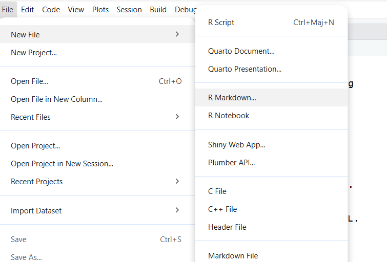
Start a document II
Specify the title of your document and the output
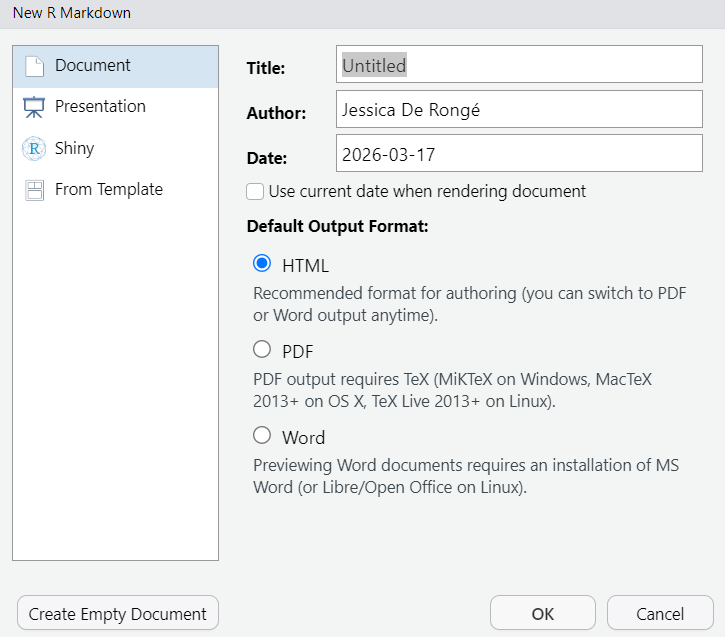
Document
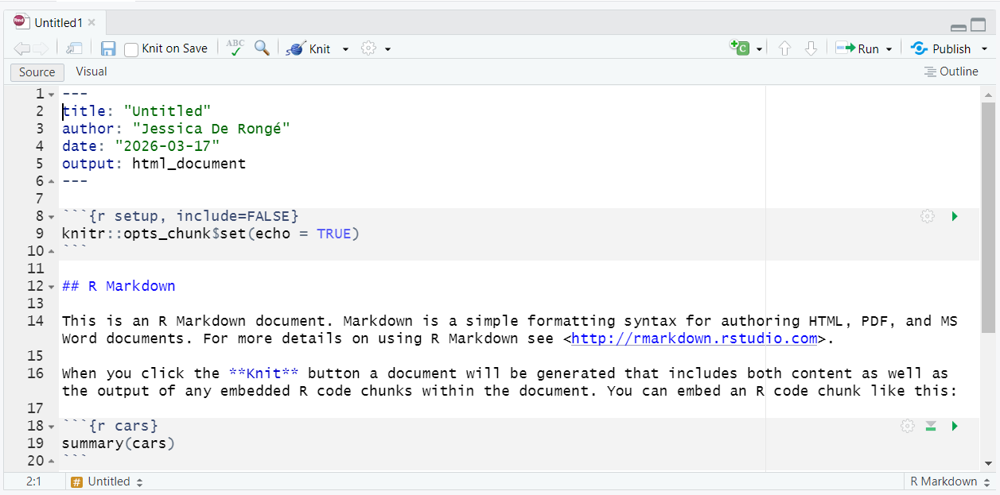
YAML
The YAML is the metadata block that defines the output format and defines the options of the format selected.
If you want to add a table of contents to your document, you need to specify toc: true in your YAML.
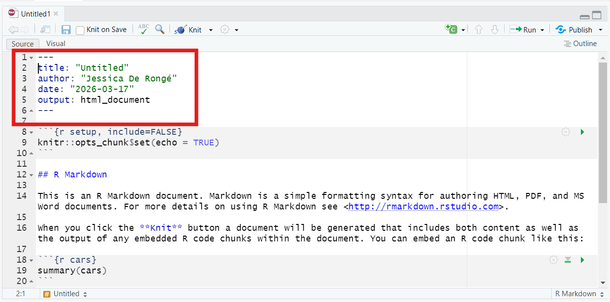
Setup chunck
This is a obligatory chunk to keep in your document. This is where you can specify how you want your code to appear in your document.
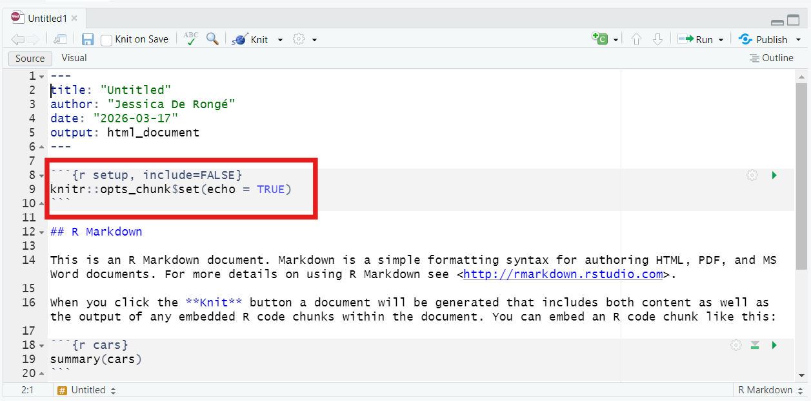
Setup options
| Option | Effect |
|---|---|
| prompt = FALSE | Remove the prompt characters > from the R code |
| comment = NA | Remove ## from the start of each line of the results. |
| echo = FALSE | Don’t show the code. |
| results = “hide” | Don’t show the results. |
| include = FALSE | Show nothing (run code). |
| eval = FALSE | Don’t run the code. |
| message = FALSE | Preserve messages in the output (the same apply to warnings with warning = FALSE). |
| results = “hold” | Hold all the output pieces and display them after the code chunk. |
| tidy = “styler” | Reformat the R code shown in the output. |
| cache = TRUE | Skip the execution of the code if it has been executed before and nothing in the code has changed since then. This is useful for time-consuming R code. |
Include text
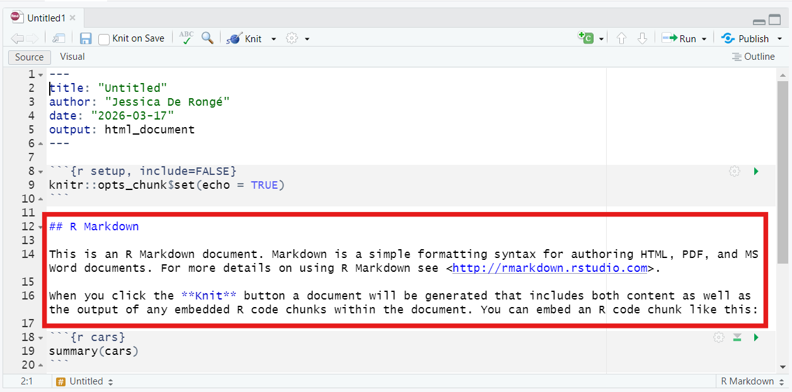
Title
To specify a title in the text section of your document you need to use #
# = Title 1
## = Title 2 (subtitle)
### = Title 3 (subsubtitle)
…
Include code
To include code, you need to add a chunk code.
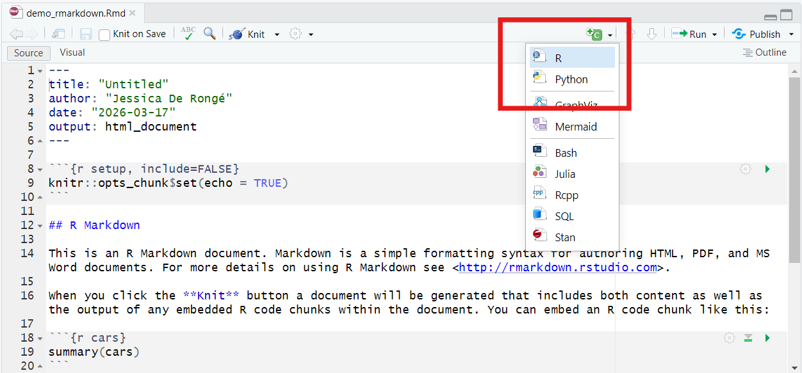
R chunk
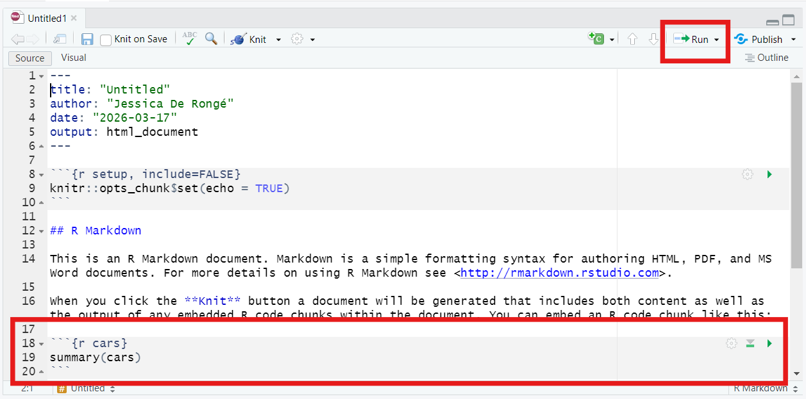
Running code
You can run the code before rendering your output.
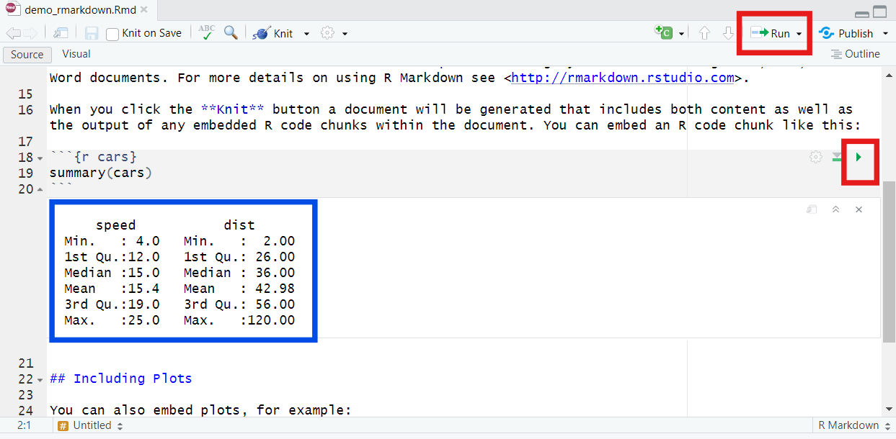
Output
To get your html or pdf document, you need to knitr the document.
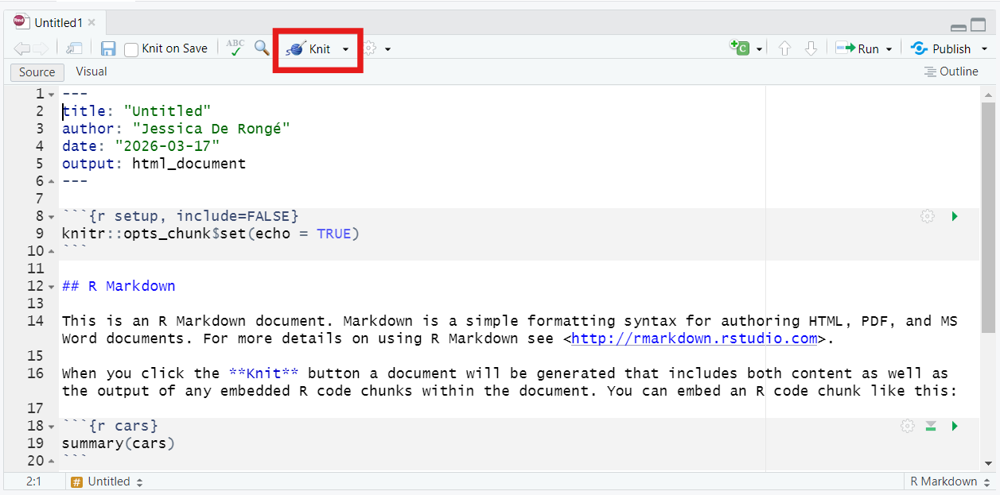
PDF document
You need to have Latex installed on your computer or the tinytex package in Rstudio.
install.packages(“tinytex”) tinytex::install_tinytex() to install TinyTeX (TeX distribution)
change output format
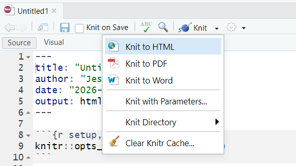
Render output
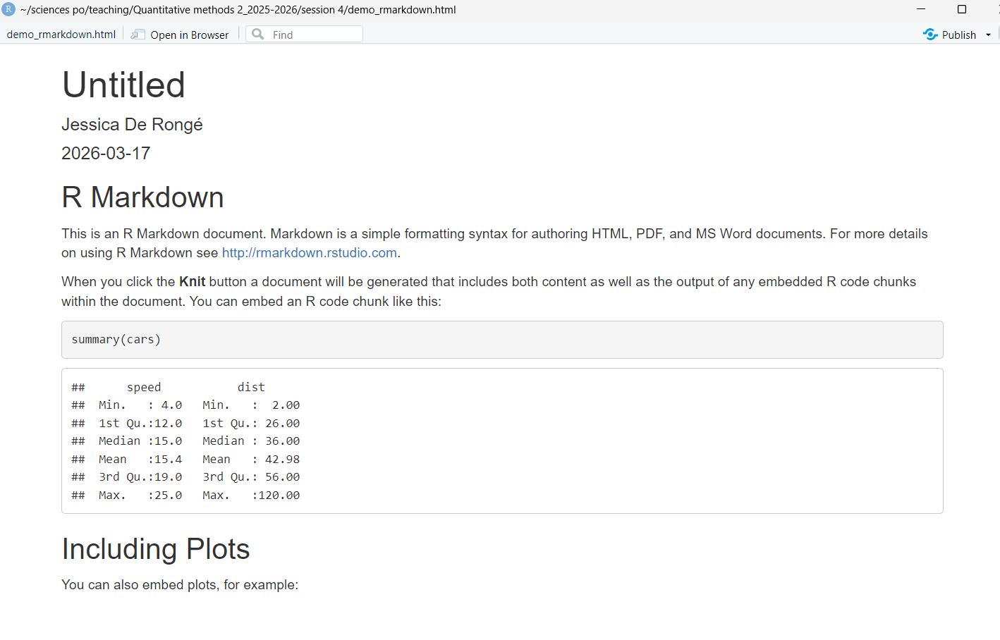
Difference-in-Differences
Panel Data
What is panel data?
Is there something specific you need to do when using panel data in regression?
Panel Data
Repeated observations from the same individual
Observations are not independent
Use individual fixed effects and cluster SE
Difference-in-Differences
What is it?
When do you use it?
Which type of data do you need?
Difference-in-Differences
Causal inference of observational data
Regression technique
Compare two groups (control vs treatment)
Compare Pre and Post treatment
=> Measure the causal effect of a treatment in terms of change and not levels
Difference-in-Differences
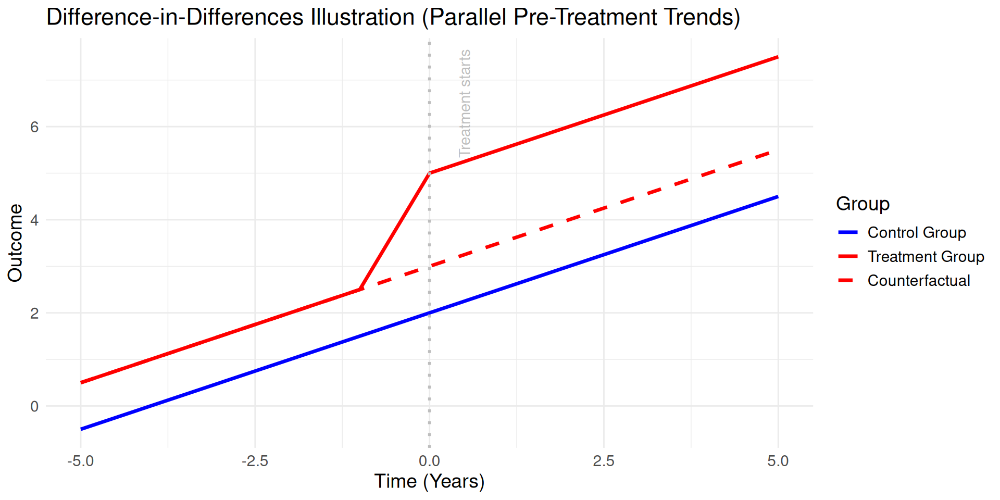
In applied research
- Assessing the impact of Medicare on mortality rates (Miller et al, 2021)

In applied research
- Assessing the impact of wind turbine installations on the vote for the far-right


Event-study
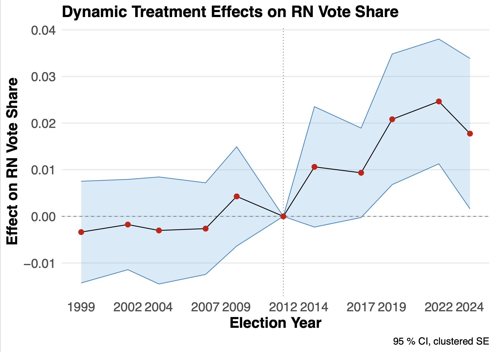
Difference-in-Differences
\[ Y_{it}= \beta_0+\beta_1 Treatment_i+ \beta_2 Time_t+ \beta_3 Treatment_i*Time_t +\epsilon \]
- The causal effect is the interaction effect \(\beta_3\)
- This model is called two-way fixed effects: TWFE
- More robust and recent estimators exist in the literature (de Chaisemartin & D’Haultfœuille, 2020; Callaway & Sant’Anna, 2021)
in R
lm(formula, data) :
fomula: Y ~ Time*Treatment (+controls)
data: name of the dataset
feols(formula|FE,cluster=~group,data):
fomula: Y ~ Time*Treatment (+controls)
FE: fixed effects
cluster=~group: specify that you want clustered SE (if you do not add this argument, you will have IID SE like in lm)
data: name of the dataset
With feols function, the stargazer function does not work. You need to use etable().
Example:
Imagine you want to study the effect of a new electoral reform throughout a country. Before introducing the electoral reform, the government decided to test the reform in only some regions of the country. The government wants to know if it introduces mail-in voting, will increase voter turnout.
The dataset contains voter turnout for 2010, 2014 and 2018. The reform was applied to 10 regions for the 2018 elections.
Data simulation
The data has been simulated with this code:
Model
===============================================
Dependent variable:
---------------------------
Turnout
-----------------------------------------------
Post 1.831
(2.396)
Treated -1.131
(2.396)
Post:Treated 11.433***
(3.388)
Constant 63.486***
(1.694)
-----------------------------------------------
Observations 40
R2 0.517
Adjusted R2 0.477
Residual Std. Error 5.357 (df = 36)
F Statistic 12.856*** (df = 3; 36)
===============================================
Note: *p<0.1; **p<0.05; ***p<0.01Interpretation
- What is the effect of the new reform on voter turnout?
Parallel trend assumption
The difference-in-differences design is only valid if the parallel trend assumption is valid. The parallel trend assumption is the assumption that before treatment, both the control and treatment had a parallel trend for the outcome variable throughout time. If the parallel trend is wrong, the construction of the counter-factual is wrong, which would create a bias estimator.
Parallel trend check
How can you check?
Graphically
Placebo test
Event-study
Visualisation of parallel trends
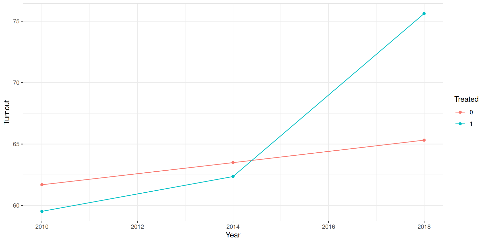
Placebo test
===============================================
Dependent variable:
---------------------------
Turnout
-----------------------------------------------
Year 0.450
(0.565)
Treated -520.946
(1,606.946)
Year:Treated 0.258
(0.799)
Constant -842.452
(1,136.282)
-----------------------------------------------
Observations 40
R2 0.083
Adjusted R2 0.007
Residual Std. Error 5.051 (df = 36)
F Statistic 1.090 (df = 3; 36)
===============================================
Note: *p<0.1; **p<0.05; ***p<0.01Example
Based on the data from Angelucci and Cagé, 2019.
We are interested in understanding how the introduction of advertisements in TV programs in France has impacted the revenues of newspapers throughout France. The hypothesis being that it impacted only national newspapers and not local ones.
Data
You can find the data here. You will need to sign in to be able to download it.
library(haven)
library(tidyverse)
newspapers <- read_dta("data/Angelucci_Cage_AEJMicro_dataset.dta")
newspapers <-
newspapers |>
select(
year, id_news, after_national, local, national, ra_cst, ps_cst, qtotal
) |>
mutate(ra_cst_div_qtotal = ra_cst / qtotal,
after_national = if_else(year > 1967, 1, 0),
after_national_placebo = if_else(year >= 1963, 1, 0),
across(c(id_news, local, national, after_national), as.factor),
year = as.factor(year)) Model
did
Dependent Var.: log(ra_cst)
national1 x after_national1 -0.2175. (0.1164)
Fixed-Effects: -----------------
year Yes
id_news Yes
___________________________ _________________
S.E.: Clustered by: id_news
Observations 1,052
R2 0.98576
Within R2 0.04730
---
Signif. codes: 0 '***' 0.001 '**' 0.01 '*' 0.05 '.' 0.1 ' ' 1Placebo check
# A tibble: 1,196 × 10
year id_news after_national local national ra_cst ps_cst qtotal
<fct> <fct> <fct> <fct> <fct> <dbl> <dbl> <dbl>
1 1960 1 0 1 0 52890272 2.29 94478.
2 1961 1 0 1 0 56601060 2.20 96289.
3 1962 1 0 1 0 64840752 2.13 97313.
4 1963 1 0 1 0 70582944 2.43 101068.
5 1964 1 0 1 0 74977888 2.35 102103.
6 1965 1 0 1 0 74438248 2.29 105169.
7 1966 1 0 1 0 81383000 2.31 126235.
8 1967 1 0 1 0 80263152 2.88 128667.
9 1968 1 1 1 0 87165704 3.45 131824.
10 1969 1 1 1 0 102596384 3.28 132417.
# ℹ 1,186 more rows
# ℹ 2 more variables: ra_cst_div_qtotal <dbl>, after_national_placebo <dbl> did_placebo
Dependent Var.: log(ra_cst)
national1 x after_national_placebo -0.2007. (0.1189)
Fixed-Effects: -----------------
year Yes
id_news Yes
__________________________________ _________________
S.E.: Clustered by: id_news
Observations 1,052
R2 0.98542
Within R2 0.02427
---
Signif. codes: 0 '***' 0.001 '**' 0.01 '*' 0.05 '.' 0.1 ' ' 1Event-study
OLS estimation, Dep. Var.: log(ra_cst)
Observations: 1,052
Fixed-effects: id_news: 79, year: 15
Standard-errors: Clustered (id_news)
Estimate Std. Error t value Pr(>|t|)
year::1960:national 0.079660 0.119697 0.665512 0.507686
year::1961:national 0.167357 0.107821 1.552170 0.124670
year::1962:national 0.125606 0.100040 1.255561 0.213024
year::1963:national 0.097365 0.069836 1.394198 0.167217
year::1964:national 0.100472 0.070298 1.429236 0.156929
year::1965:national 0.029466 0.044489 0.662320 0.509719
year::1967:national -0.086302 0.042967 -2.008586 0.048042 *
year::1968:national -0.100177 0.060909 -1.644705 0.104055
year::1969:national -0.110884 0.113942 -0.973156 0.333484
year::1970:national -0.076772 0.096420 -0.796229 0.428316
year::1971:national -0.120644 0.114609 -1.052657 0.295748
year::1972:national -0.203793 0.111488 -1.827926 0.071384 .
year::1973:national -0.249303 0.140461 -1.774891 0.079817 .
year::1974:national -0.311909 0.149087 -2.092133 0.039680 *
---
Signif. codes: 0 '***' 0.001 '**' 0.01 '*' 0.05 '.' 0.1 ' ' 1
RMSE: 0.169336 Adj. R2: 0.984583
Within R2: 0.072478Event-study

Exercises
Exercise 1
In the USA, in 2000 a law was passed with the Right To Carry (RTC) arms in certain states (simulated example). US lawmakers are interested in knowing if this increased or not crimes in cities.
Exercise 2
In 2021, a few local governments implemented policies with stricter emissions controls, other local governments have not (simulated example). The air quality data is available from 2018 to 2022.
Exercise 3
In 2019, some cities decided to introduce a smoking ban on the terraces of bars and restaurants (simulated example). We want to analyse the effect of the smoking ban on the number of hospitalisations linked to respiratory disease. Use the smoking dataset.